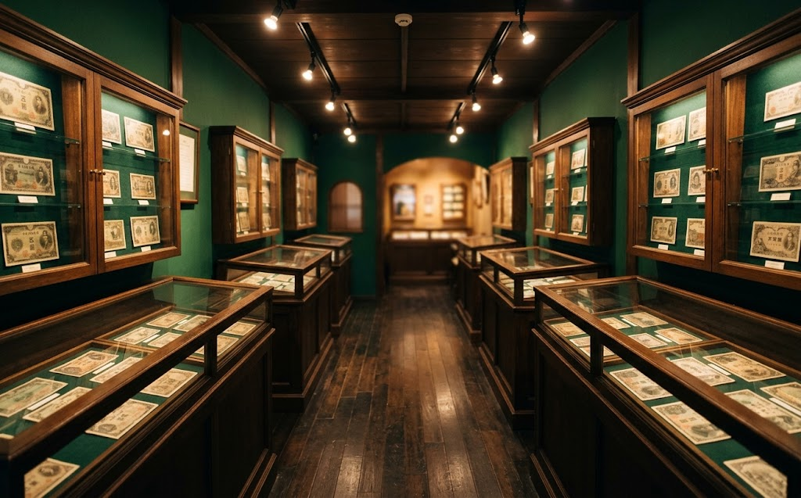
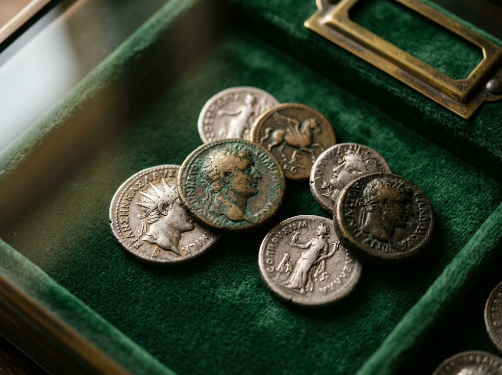
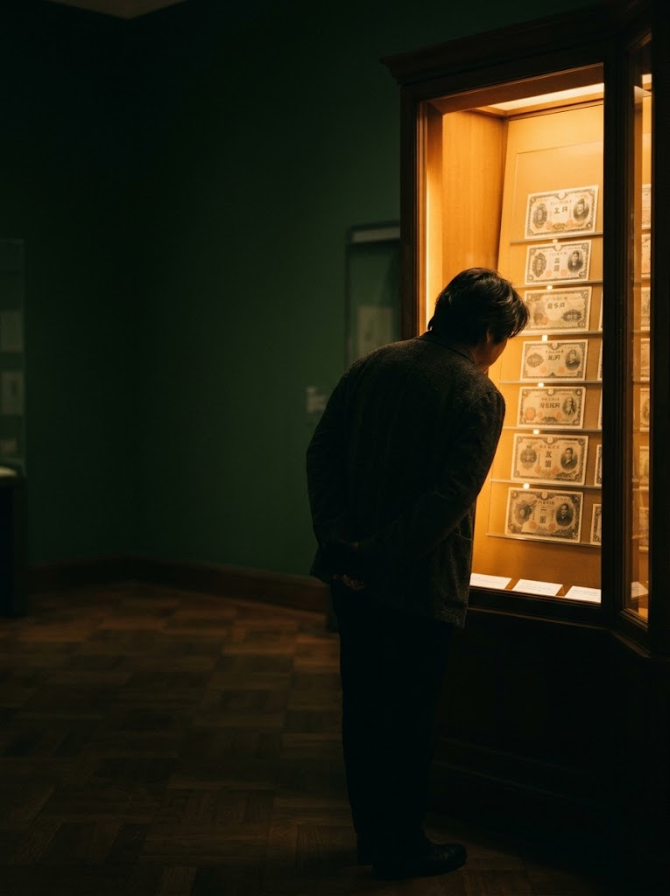

置戸町にあるお金の博物館は、日本銀行の100周年記念事業の一環として設立されました。はじまりは、貨幣資料を保存し、研究するための施設です。
2015年にはリニューアルを行い、展示内容がいっそう充実。専門的な資料を、はじめて訪れる方にも分かりやすく、親しみやすい形でご覧いただけるようになりました。

長い歴史を持つ日本銀行のコレクションを有していることが、最大の強みです。
幅広く収蔵し、貨幣の進化の過程と文化的な役割を丁寧に解説しています。
貨幣の製造工程や歴史資料、研究資料も充実。学術的な価値も高い展示です。

館長さんが親切丁寧にご説明してくれました。私設博物館でこれほどまで展示できるとは素晴らしいことです。ただ見ているだけではすぐに見終わりますが、その歴史を知ると、ますます面白くなります。日本と中国、その他の国のお金の歴史、入手されるまでのエピソード、寄贈者から送られた貴重な品、切手や絵画も展示されています。1度観覧する価値はあります。
Googleマップの口コミより夕方過ぎの閉館間際に訪問しましたが、優しそうなご夫婦の館長さんがたくさん説明してくださり、見応えもあって有意義な時間を過ごせました。
Googleマップの口コミより